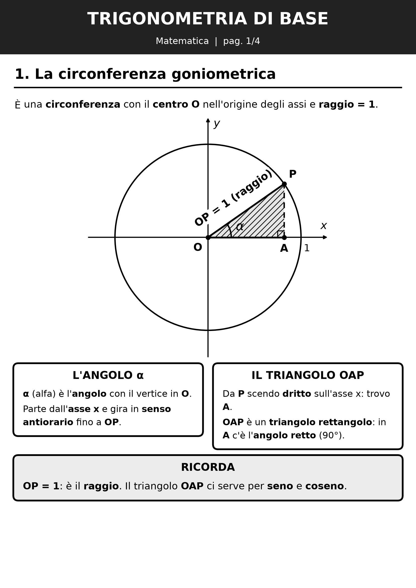
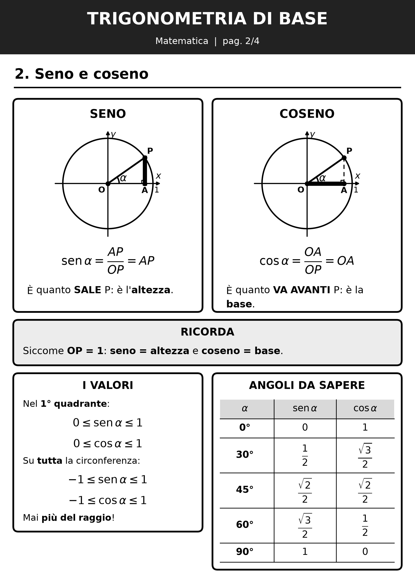
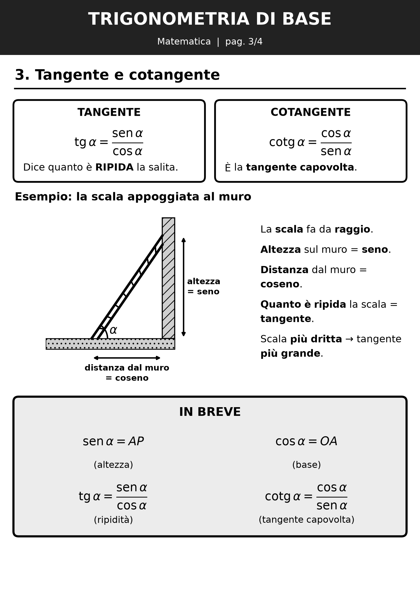
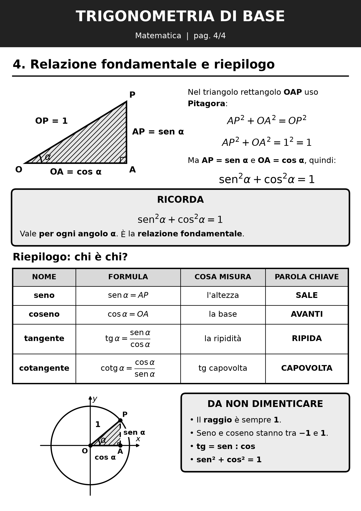

Matematica · classe quarta
Trigonometria di base: seno, coseno e tangente
Un cerchio, un triangolo e tre parole: seno, coseno, tangente. Guarda il video passo passo, poi ripassa con la scheda.
🎬 La video-lezione
- 1. La circonferenza goniometrica
- 2. Il seno
- 3. Il coseno
- 4. I valori
- 5. Tangente e cotangente
- 6. La relazione fondamentale
- 7. Riepilogo
📄 La scheda da stampare



